CSC477�Introduction to Mobile Robotics
Florian Shkurti
Week #6: Mapping

Today’s agenda
How to represent maps
Probabilistic occupancy grid mapping
Categories of maps
- Metric
- Map accurately represents lengths and angles
- Topological
- Map is reduced to a graph representation of the structure of free space
- Topometric
- Atlas: a combination of local metric maps (nodes) connected via edges
- Sequence of raw time-series observations (e.g. video)
- No metric or topological information directly represented by the map # Typical operations on maps
Distance and direction to closest obstacle
Collision detection: is a given robot configuration in free space?
Map merging / alignment
Occupancy updates
Raytracing
Distance and direction to closest obstacle
Collision detection: is a given robot configuration in free space?
Map merging / alignment
Occupancy updates
Raytracing
Common operations in
computer graphics
Occupancy Grids
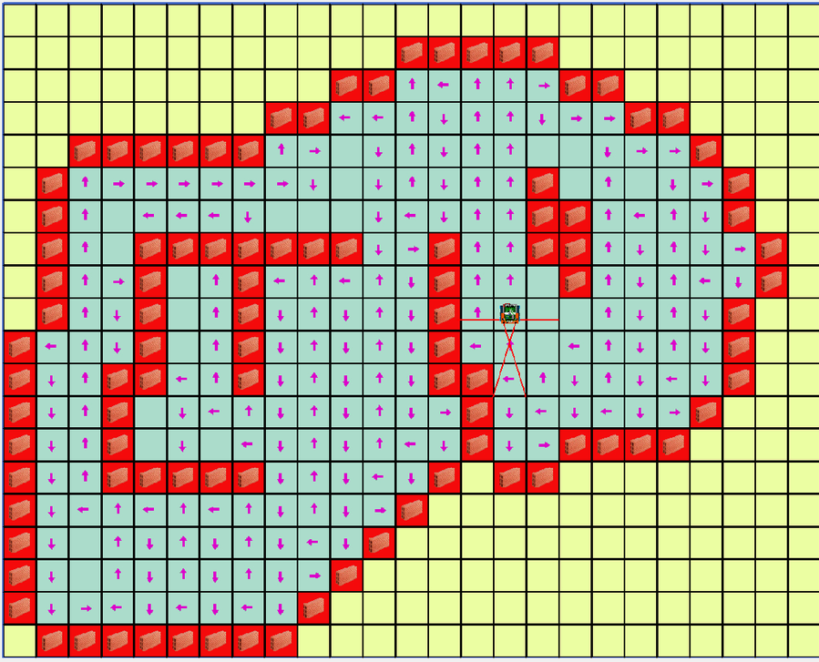


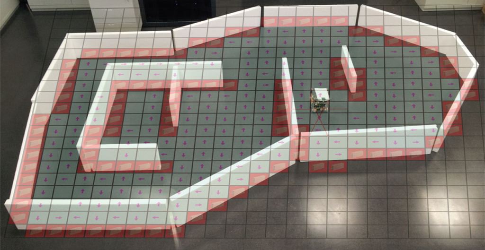
Each cell contains either:
unknown/unexplored (grey)
probability of occupation
Advantages:
O(1) occupancy lookup and update
Supports image operations
Disadvantages:
Doesn’t scale well in higher dimensions


Each cell contains either:
unknown/unexplored (grey)
probability of occupation
Quadtrees
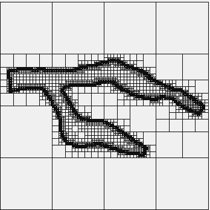
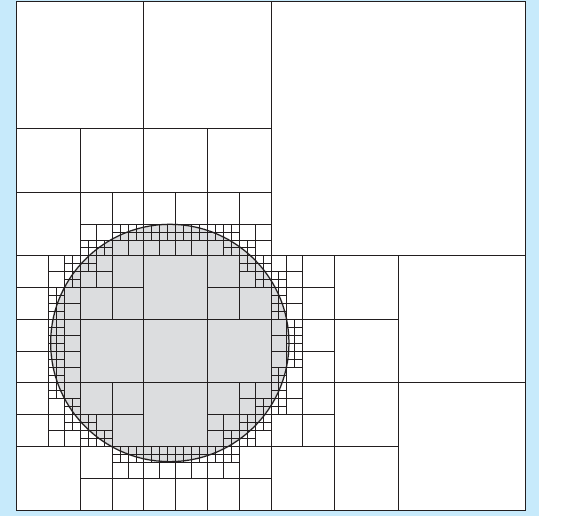

Each node represents a square. If the node is fully empty or fully occupied it has no children.
If it is partially occupied it has four children. Subdivision stops after some minimal square size.
Octrees

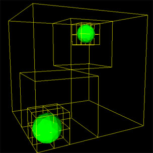
Each node represents a cube. If the node is fully empty or fully occupied it has no children.
If it is partially occupied it has eight children. Subdivision stops after some minimal cube size.


Problem 1 : quadtrees and octrees are not
balanced trees. So, in the worst case an
occupancy query could be O(n) in the
number of nodes.
Each node represents a cube. If the node is fully empty or fully occupied it has no children.
If it is partially occupied it has eight children. Subdivision stops after some minimal cube size.


Problem 1 : quadtrees and octrees are not
balanced trees. So, in the worst case an
occupancy query could be O(n) in the
number of nodes.
Problem 2 : quadtrees and octrees are
sensitive to small changes in the location
of obstacles.
Each node represents a cube. If the node is fully empty or fully occupied it has no children.
If it is partially occupied it has eight children. Subdivision stops after some minimal cube size.
Octree Example: Octomap

Open source
as a ROS package
Implicit Surface Definitions: �Signed Distance Function

This distance function
is defined over any point
in 3D space.
Pointclouds


Advantages:
can make local changes to the map
_ without affecting the _ pointcloud _ globally_
can align pointclouds _ _
nearest neighbor queries are
_ easy with _ kd -trees or locality-sensitive
_ hashing_
Disadvantages:
need to segment objects in the map
raytracing is approximate and nontrivial
Topological Maps
Topology: study of spatial properties that are preserved under continuous deformations of the space.
Generalized Voronoi Graph (GVG)

GVG nodes: points that are equidistant to 3 or more obstacle points
Retractions are
also called
roadmaps.
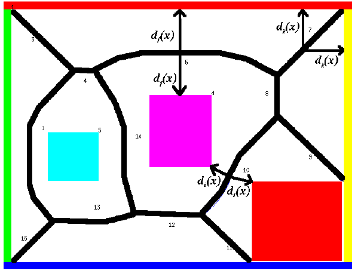
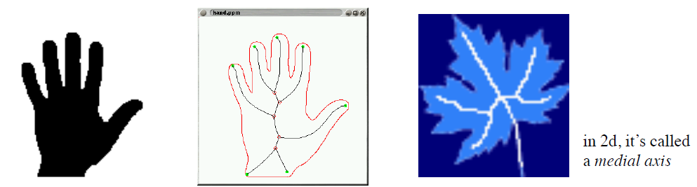
Turns comparison between pixels to comparison between graphs.
GVG: sensitivity

GVG: advantages
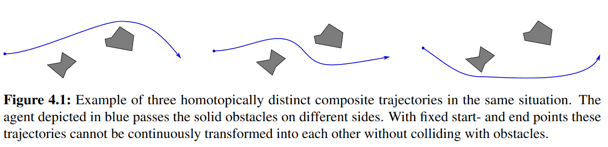
Can specify whether we pass on the “left” or “right” of each obstacle
on our way to the goal.
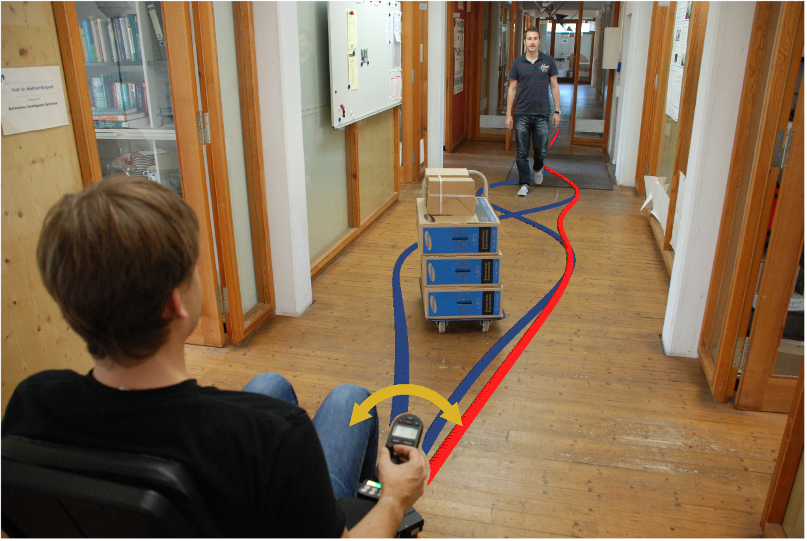
How a curve winds around an obstacle
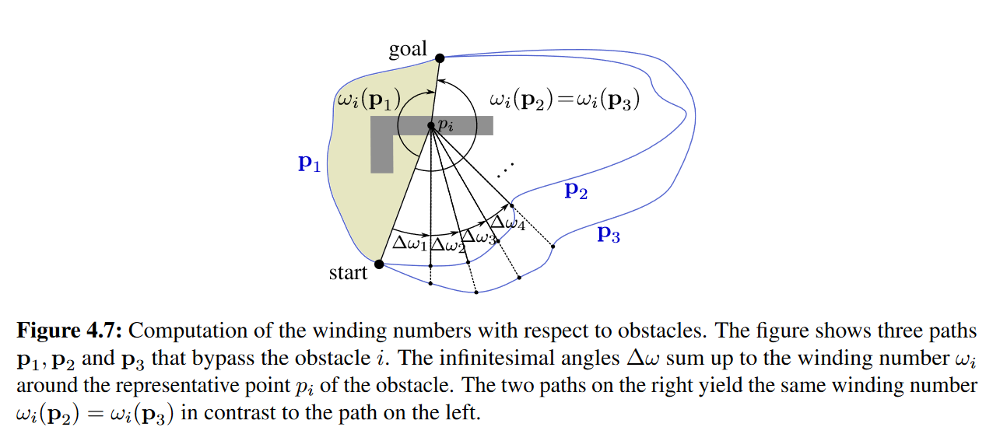

Note: winding angle of a path
can be more than 360 degrees
Homotopy classes
Two paths with the same endpoints
are homotopic or belong to the same
homotopy class iff one can be deformed
continuously (without hitting obstacles)
into the other. Formally, the paths:
with
are homotopic iff there exists a continuous
function
such that for any time t:


Topometric maps
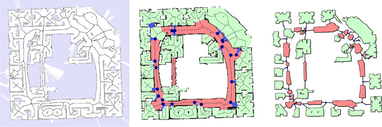
Edges: rotations and
translations between
local maps, but also topological
connectivity
Local,
metric map
Local,
metric map
Local,
metric map
Main advantage:
allows us combine accurate local
maps into a global, __ typically __
inconsistent map that nevertheless
provides sufficient navigation information.
Local,
metric map
Maps of Raw Observations
Main Idea
- Map = entire (unprocessed) sequence of observations, e.g. video.
- Do not try to support distance, collision, and raytracing queries.
- Instead, provide only a similarity/nearest neighbors query
- “Find the image in the video that is most similar to the one I’m seeing now.”
- History of observations determines a (set of) location(s) in the map Metric Map Alignment
a.k.a. scan matching, a.k.a. iterative closest point (ICP), a.k.a. registration
Problem definition
- Given
- two pointclouds or
- a (local) laser scan and a pointcloud (global map) or
- two maps
- find the rotation and translation that aligns them
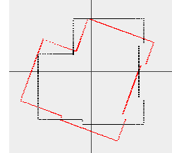
- Given
- two pointclouds or
- a (local) laser scan and a pointcloud (global map) or
- two maps
- find the rotation and translation that aligns them
- Assumption: We are assuming in these slides for simplicity that that rigid-body transformations are sufficient to align the scans. They might not be. We might need to also model scaling, non-uniform stretching and other nonlinear transformations.

Scan alignment with known correspondences


When correct correspondences
are known we say that data
association is known/unambiguous.


In general, data association is a real
and hairy problem in robotics.

Find the 3D rotation matrix R and the 3D translation
vector t that will best align the corresponding points


Find the 3D rotation matrix R and the 3D translation
vector t that will best align the corresponding points


Q: How do we minimize this error?
A: Turns out it has a closed-form solution.
Scan alignment with unknown correspondences


Main idea for data association:
associate each point in the source scan
to its nearest neighbor in the target scan
Find optimal rotation and translation
for this correspondence.
Repeat until no significant drop in error.
libpointmatcher


Today’s agenda
How to represent maps
Probabilistic occupancy grid mapping
What we want to do

Terminology
Pose: the rotation and translation of a robot
Odometry: the transformation of the body frame with respect to its initial pose (fixed frame of reference).
Dynamics model: what is the next state given current state and control?
Sensor measurement model: what is the expected measurement given the robot’s current state?


Perfect models vs. Reality


Noise as a
random variable


Sensor
Measurements


e.g. GPS (simplified)


probabilistic
dynamics model
Sensor
Measurements


e.g. GPS (simplified)
probabilistic
measurement model

Defining the problem
The occupancy grid map is a binary random variable
width = #columns
height = #rows
of the occupancy grid

The occupancy grid map is a binary random variable
The path of the robot up to time t is a sequence of random variables
with
width = #columns
height = #rows
of the occupancy grid


Odometry coordinates
The occupancy grid map is a binary random variable
The path of the robot up to time t is a sequence of random variables
with
At each time step the robot makes a measurement (sonar/laser).
Measurements up to time t are a sequence of random variables
with
width = #columns
height = #rows
of the occupancy grid


Odometry coordinates
K = #beams, or
#points in the scan


(range, angle) in
the laser’s local
coordinates
The goal of mapping
To estimate the probability of any map, given path and measurements

Sensor
Measurements
Odometry / Robot Poses
To estimate the probability of any map, given path and measurements
This is intractable. E.g. for a 100 x 100 grid there are possible binary maps.


To estimate the probability of any map, given path and measurements
This is intractable. E.g. for a 100 x 100 grid there are possible binary maps.
We can approximate


Approximation ignores all dependencies
between map cells, given known info.
Assumes (for tractability) that cells are
independent given path and measurements
Why is it an approximation?
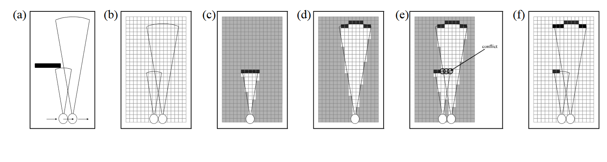

Resulting map when
considering cells
jointly
Nearby
measurements
Resulting map when
considering cells
independently
Evaluating the occupancy of a map cell
How do we evaluate ?

How do we evaluate ?


Conditional Bayes’ Rule

How do we evaluate ?
Using conditional Bayes’ rule we get


Conditional Bayes’ Rule

How do we evaluate ?
Using conditional Bayes’ rule we get
And we simplify


If C is independent of A
given B, then C provides
no extra information
about A after we know B


How do we evaluate ?
Using conditional Bayes’ rule we get
And we simplify


Current state without
current measurement provides
no additional information
about the occupancy of the map cell
Current measurement
only depends on current
state and map cell

And we simplify:
Another way to write this:
Belief at time t-1 was updated to belief at time t based on likelihood of measurement received at time t.


And we simplify:
Another way to write this:

So, as long as we can evaluate
the measurement likelihood
and the normalization factor
we can do the belief update.


And we simplify:
Another way to write this:

So, as long as we can evaluate
the measurement likelihood
and the normalization factor
we can do the belief update.


Problem: this is hard to
compute. How can we avoid it?
The log-odds trick for binary random variables
We showed
Define the log odds ratio


We showed (1)
Define the log odds ratio


We showed (1)
Define the log odds ratio
Then (1) becomes


We showed (1)
Define the log odds ratio
Then (1) becomes
We can recover the original belief as


We showed (1)
Define the log odds ratio
Then (1) becomes


So, as long as we can evaluate
the log odds ratio for the measurement likelihood:
we can do the belief update.

Log-odds ratio for the measurement likelihood
We want to compute to do the belief update
We apply conditional Bayes’ rule again:


We want to compute to do the belief update
We apply conditional Bayes’ rule again:
If we take the log-odds ratio:


We want to compute to do the belief update
We apply conditional Bayes’ rule again:
If we take the log-odds ratio:
We can simplify further:


Knowing the current state provides no
information about whether cell is
occupied, if there are no observations

We want to compute to do the belief update
We apply conditional Bayes’ rule again:
If we take the log-odds ratio:
We can simplify further:


Prior probability of cell being occupied.
Can choose uniform distribution, for example.
We want to compute to do the belief update
We apply conditional Bayes’ rule again:
If we take the log-odds ratio:
We can simplify further:


Inverse measurement model:
what is the likelihood of the map
cell being occupied given the current
state and current measurement?

Summary: �Log-odds ratio for the measurement likelihood
We want to compute but it’s hard
Instead, we can compute the log-odds ratio of the measurement likelihood in terms of the inverse measurement model:


Inverse measurement model:
what is the likelihood of the map
cell being occupied given the current
state and current measurement?
Inverse sensor measurement model

Given map cell , the robot’s state , and beams


Find index k of sensor beam that is closest in heading to the cell


Given map cell , the robot’s state , and beams


Find index k of sensor beam that is closest in heading to the cell


If the cell is sufficiently closer than


// Cell is most likely free
Return that is well below 0.5


Given map cell , the robot’s state , and beams


Find index k of sensor beam that is closest in heading to the cell

If the cell is sufficiently farther than or out of the field of view


// We don’t have enough information to decide whether cell is occupied
Return prior occupation probability


If the cell is sufficiently closer than


// Cell is most likely free
Return that is well below 0.5


Given map cell , the robot’s state , and beams


Find index k of sensor beam that is closest in heading to the cell

If the cell is sufficiently farther than or out of the field of view


// We don’t have enough information to decide whether cell is occupied
Return prior occupation probability

If the cell is nearly as far as the measurement


// Cell is most likely occupied
Return that is well above 0.5


If the cell is sufficiently closer than


// Cell is most likely free
Return that is well below 0.5

inverse_sensor_measurement_model( , , )�From Probabilistic Robotics, chapter 9.2


- Let be the center of the cell
- Let
- Let // Might need to ensure this angle difference is in
- The index of the closest-in-heading beam to is
- If or
- Return the log odds ratio of the prior occupancy
- If and
- Return the log odds ratio of being occupied (corresponding to occupation probability > 0.5)
- If
- Return the log odds ratio of being free (corresponding to occupation probability < 0.5)


Recap
We wanted to compute the likelihood of any map based on known states and observations

We wanted to compute the likelihood of any map based on known path and observations
To evaluate we had to apply Bayes’ theorem, which revealed a way to recursively update the belief


Very frequent
reasoning in
probabilistic
robotics

We wanted to compute the likelihood of any map based on known path and observations
To evaluate we had to apply Bayes’ theorem, which revealed a way to recursively update the belief
To avoid evaluating we used the log odds ratio


Can do this for binary
random variables

We wanted to compute the likelihood of any map based on known path and observations
To evaluate we had to apply Bayes’ theorem, which revealed a way to recursively update the belief
To avoid evaluating we used the log odds ratio
Computing the forward measurement model was hard, so we applied Bayes’ rule again, to get an inverse measurement model and an easier-to-compute log-odds ratio:


Occupancy Grid Algorithm
Upon reception of a new laser/sonar/scan measurement
Let the robot’s current state be
Let the previous log-odds ratio of the occupancy belief be the 2D array where i is a row, j is a column
In the beginning we set the prior where the occupancy probability is a design decision.


- Upon reception of a new laser/sonar/scan measurement
- Let the robot’s current state be
- Let the previous log-odds ratio of the occupancy belief be the 2D array where i is a row, j is a column
- In the beginning we set the prior where the occupancy probability is a design decision.
- For all cells (i,j) in the grid
- If the cell (i,j) is in the field of view of the robot’s sensor at state
- Else
- If asked, return the following 2D matrix of occupancy probabilities:


Results
The maximum likelihood map is obtained by clipping the occupancy grid map at a threshold of 0.5
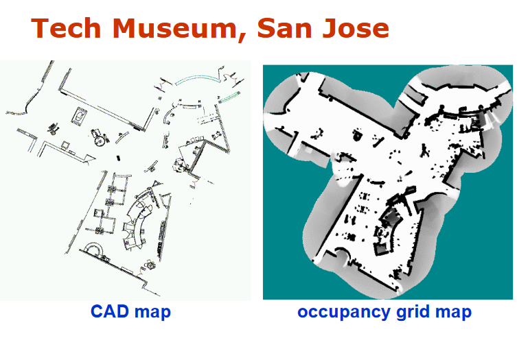